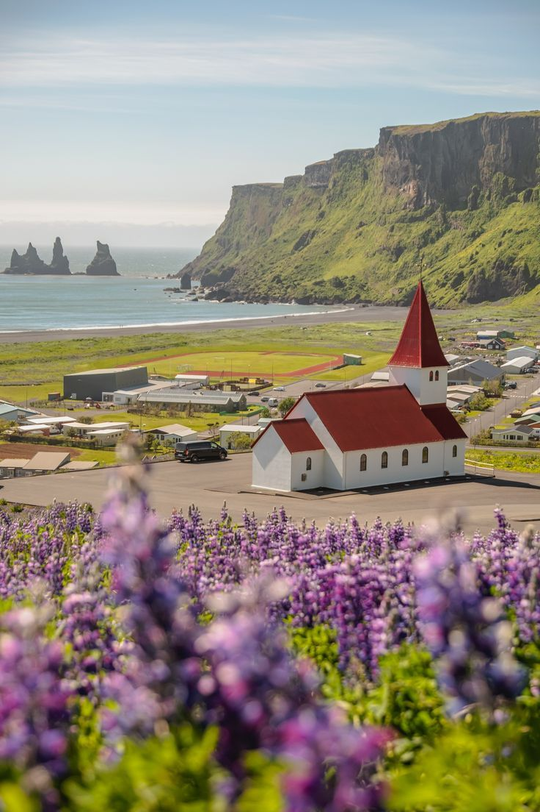

The Nomads of the High Plateau
For generations, the seasonal migration across the central steppe has defined survival. We spent forty days documenting the resilience of the last traditional caravans as they navigate a changing climate.

Capturing the Arctic Night
A technical and emotional journey into the heart of the Svalbard winter, documenting the solar maximum.

The Raked Sands of Silence
Finding stillness in the meticulously maintained Zen gardens of Kyoto's most private temples.

Dust and Gold: The Sahara
Navigating the shifting corridors of the Erg Chebbi during the solstice winds.


Behind the Lens
"Storytelling at TerraVoyage isn't about the highlights; it's about the silences between them. We stay longer, we listen deeper, and we document with a responsibility to the truth of the encounter."
— Julian Thorne, Senior Storyteller
How We Tell Stories
Research
Deep archival research and cultural consultation before the first shutter click.
Immersion
Living within the narrative, prioritizing presence over technical perfection.
Documentation
Preserving the authentic pulse of the encounter through archival-grade media.
Reader Reflections
"These aren't just articles; they are windows into worlds I didn't know still existed. The photography is hauntingly beautiful."
Clara M.
London, UK"TerraVoyage captures the dignity of human resilience like no other platform. Every story leaves me with new eyes."
David S.
Toronto, CA"The depth of the 'Nomads' series was breath-taking. It's rare to find such high-quality investigative travel writing today."
Aiko T.
Tokyo, JPDiscover Stories That Matter.
Go beyond the headline. Explore narratives that connect humanity across the furthest horizons.